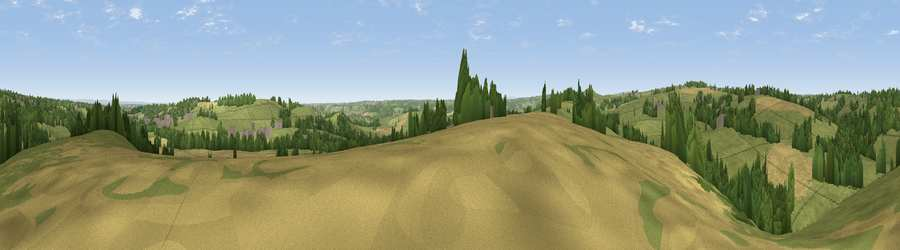

Viewpoint near Burn Bridge
#23317 in England · top 40% of its area beats it · near Burn Bridge · path 87 mWhere it is
The exact computed spot (SE 29175 50575). Click the marker for map links.
Public access: the nearest public right of way is about 87 m away — the final stretch may cross private land. Computed from Natural England's CRoW access layer and OpenStreetMap rights of way — not the legal definitive map. Always verify locally.
The view, rendered

A 360° render of this exact spot computed from the terrain model, tree cover and land cover — summer colours, afternoon light, calibrated against photographs of famous viewpoints. Real trees, hedges and buildings will differ in detail.
The panorama
Grey silhouette: terrain skyline in each direction (720 bearings, Earth curvature and refraction included). Dashed green: skyline with trees (+15 m) and buildings (+8 m) as obstacles. Blue strip: how far the ground is visible on each bearing.
Where the view opens
Wedge length = distance to the farthest visible ground on that bearing (vegetation-aware). Rings at 10, 25 and 50 km.
What fills the view
61% grassland · 20% cropland · 17% woodland · 2% built-up
Angular shares of the visible panorama (visual magnitude), not map area. Landscape diversity 0.43 (0–1 Shannon).
Key numbers
More beautiful places nearby
The staircase of upgrades: each row has a higher view potential than everything closer. Driving times are estimates from straight-line distance, calibrated against real road routing — check an actual route before setting out.
| Place | Direction | Drive | Score |
|---|---|---|---|
| Viewpoint near Burn Bridge | N · 1 km | ~4 min | 48.6 |
| Walton Head Whin | ESE · 2 km | ~5 min | 60.5 |
| Viewpoint near North Rigton | SW · 3 km | ~7 min | 66.6 |
| Viewpoint near Timble | W · 8 km | ~17 min | 68.1 |
| Viewpoint near Timble | W · 9 km | ~18 min | 68.3 |
| Surprise View | SW · 11 km | ~21 min | 69.3 |
| Viewpoint near Otley | SW · 11 km | ~21 min | 77.5 |
| Hood Hill | NE · 37 km | ~56 min | 79.6 |
53.95046, -1.55694 · source: screening · position refined by local search. Computed location — check access rights before visiting.